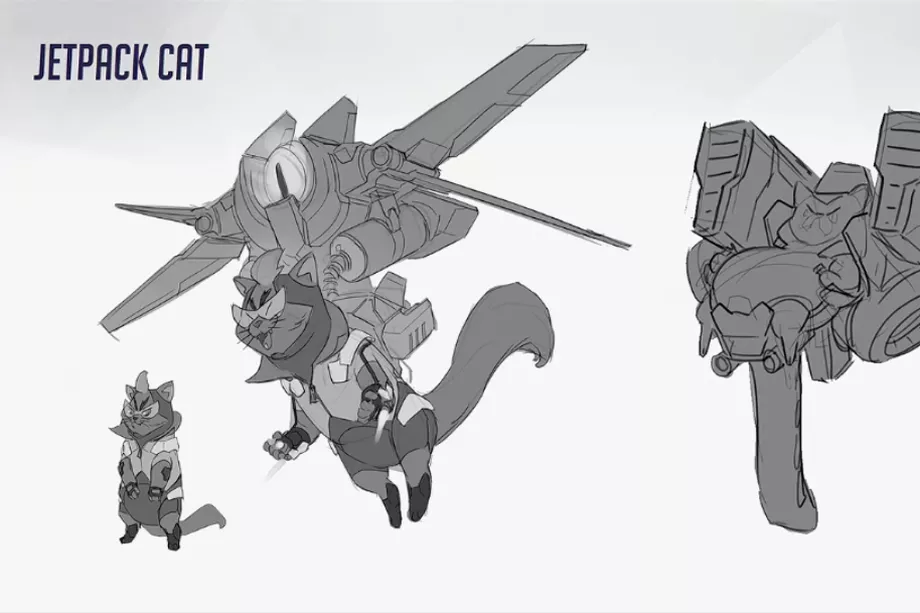

Here’s Overwatch’s canceled Jetpack Cat hero
It’s no secret that Blizzard has ideated hundreds of heroes for Overwatch, far more than have ultimately made it into the game. But few of those characters left on the cutting room floor have been as compelling as the character known as “Jetpack Cat.” Game director Jeff Kaplan revealed the existence of Jetpack Cat earlier this year in an interview with GameSpot. It was an early concept that was beloved internally, he said, but recognized as “too ridiculous for Overwatch.” At BlizzCon today, Kaplan and lead character concept artist Arnold Tsang showed off some of the earliest ideas for Overwatch, which was born from the ashes of Blizzard’s canceled MMO, Titan. Jetpack Cat was created during that time of exploration, Kaplan said, but as amusing as the concept was, it “felt like we were slipping out of the universe” they were building. There were at least two ideas for Jetpack Cat: one a puckish cartoon cat with a heroic streak and another (perhaps more accurate) lazy version who uses his jetpack as a mobile recliner of sorts. As it turns out, Jetpack Cat wasn’t the only flying animal Blizzard dreamt up during Overwatch’s early days. Here are some other early hero ideas.
Yes, that is a flying alligator. That hero is joined by a few other wild ideas, including a free-flying monkey with a flamethrower, a gargoyle, a four-legged simian mech and “a creepy kid with a goatee” and a flaming head. There may be hope for Jetpack Cat and Flying Alligator to return someday, however, as Kaplan noted “these might be ideas for another game, but not Overwatch.” Kaplan has also talked about one of the other straight-up bizarre ideas, known only as the Hockey Hero (who kind of made it into the game as a skin for Lúcio). Here’s a peek at Hockey Hero, as well as an alien creature and a hero in a full bomb suit.